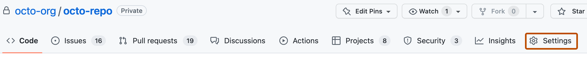
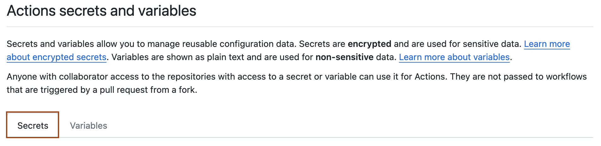

Learn how to create secrets at the repository, environment, and organization levels for GitHub Actions workflows.
Creating secrets for a repository
To create secrets or variables on GitHub for an organization repository, you must have write access. For a personal account repository, you must be a repository collaborator.
On GitHub, navigate to the main page of the repository.
Under your repository name, click Settings. If you cannot see the "Settings" tab, select the dropdown menu, then click Settings.

In the "Security" section of the sidebar, select Secrets and variables, then click Actions.
Click the Secrets tab.

Click New repository secret.
In the Name field, type a name for your secret.
In the Secret field, enter the value for your secret.
Click Add secret.
If your repository has environment secrets or can access secrets from the parent organization, then those secrets are also listed on this page.
To add a repository secret, use the gh secret set subcommand. Replace secret-name with the name of your secret.
gh secret set SECRET_NAME
The CLI will prompt you to enter a secret value. Alternatively, you can read the value of the secret from a file.
gh secret set SECRET_NAME < secret.txt
To list all secrets for the repository, use the gh secret list subcommand.
Creating secrets for an environment
To create secrets or variables for an environment in a personal account repository, you must be the repository owner. To create secrets or variables for an environment in an organization repository, you must have admin access. For more information on environments, see Managing environments for deployment.
On GitHub, navigate to the main page of the repository.
Under your repository name, click Settings. If you cannot see the "Settings" tab, select the dropdown menu, then click Settings.
In the left sidebar, click Environments.
Click on the environment that you want to add a secret to.
Under Environment secrets, click Add secret.
Type a name for your secret in the Name input box.
Enter the value for your secret.
Click Add secret.
To add a secret for an environment, use the gh secret set subcommand with the --env or -e flag followed by the environment name.
gh secret set --env ENV_NAME SECRET_NAME
To list all secrets for an environment, use the gh secret list subcommand with the --env or -e flag followed by the environment name.
gh secret list --env ENV_NAME
Creating secrets for an organization
Note
Organization-level secrets and variables are not accessible by private repositories for GitHub Free. For more information about upgrading your GitHub subscription, see Upgrading your account's plan.
When creating a secret or variable in an organization, you can use a policy to limit access by repository. For example, you can grant access to all repositories, or limit access to only private repositories or a specified list of repositories.
Organization owners can create secrets or variables at the organization level.
On GitHub, navigate to the main page of the organization.
Under your organization name, click Settings. If you cannot see the "Settings" tab, select the dropdown menu, then click Settings.
In the "Security" section of the sidebar, select Secrets and variables, then click Actions.
Click the Secrets tab.
Click New organization secret.
Type a name for your secret in the Name input box.
Enter the Value for your secret.
From the Repository access dropdown list, choose an access policy.
Click Add secret.
Note
By default, GitHub CLI authenticates with the repo and read:org scopes. To manage organization secrets, you must additionally authorize the admin:org scope.
gh auth login --scopes "admin:org"
To add a secret for an organization, use the gh secret set subcommand with the --org or -o flag followed by the organization name.
gh secret set --org ORG_NAME SECRET_NAME
By default, the secret is only available to private repositories. To specify that the secret should be available to all repositories within the organization, use the --visibility or -v flag.
gh secret set --org ORG_NAME SECRET_NAME --visibility all
To specify that the secret should be available to selected repositories within the organization, use the --repos or -r flag.
gh secret set --org ORG_NAME SECRET_NAME --repos REPO-NAME-1, REPO-NAME-2
To list all secrets for an organization, use the gh secret list subcommand with the --org or -o flag followed by the organization name.
gh secret list --org ORG_NAME
Reviewing access to organization-level secrets
You can check which access policies are being applied to a secret in your organization.
On GitHub, navigate to the main page of the organization.
Under your organization name, click Settings. If you cannot see the "Settings" tab, select the dropdown menu, then click Settings.
In the "Security" section of the sidebar, select Secrets and variables, then click Actions.
The list of secrets includes any configured permissions and policies. For more details about the configured permissions for each secret, click Update.
Using secrets in a workflow
Note
With the exception of GITHUB_TOKEN, secrets are not passed to the runner when a workflow is triggered from a forked repository.
Secrets are not automatically passed to reusable workflows. For more information, see Reuse workflows.
If your GitHub Actions workflows need to access resources from a cloud provider that supports OpenID Connect (OIDC), you can configure your workflows to authenticate directly to the cloud provider. This will let you stop storing these credentials as long-lived secrets and provide other security benefits. For more information, see OpenID Connect.
Warning
Mask all sensitive information that is not a GitHub secret by using ::add-mask::VALUE. This causes the value to be treated as a secret and redacted from logs.
To provide an action with a secret as an input or environment variable, you can use the secrets context to access secrets you've created in your repository. For more information, see Contexts reference and Workflow syntax for GitHub Actions.
steps:
- name: Hello world action
with: # Set the secret as an input
super_secret: ${{ secrets.SuperSecret }}
env: # Or as an environment variable
super_secret: ${{ secrets.SuperSecret }}
Secrets cannot be directly referenced in if: conditionals. Instead, consider setting secrets as job-level environment variables, then referencing the environment variables to conditionally run steps in the job. For more information, see Contexts reference and jobs.<job_id>.steps[*].if.
If a secret has not been set, the return value of an expression referencing the secret (such as ${{ secrets.SuperSecret }} in the example) will be an empty string.
Avoid passing secrets between processes from the command line, whenever possible. Command-line processes may be visible to other users (using the ps command) or captured by security audit events. To help protect secrets, consider using environment variables, STDIN, or other mechanisms supported by the target process.
If you must pass secrets within a command line, then enclose them within the proper quoting rules. Secrets often contain special characters that may unintentionally affect your shell. To escape these special characters, use quoting with your environment variables. For example:
To use secrets that are larger than 48 KB, you can use a workaround to store secrets in your repository and save the decryption passphrase as a secret on GitHub. For example, you can use gpg to encrypt a file containing your secret locally before checking the encrypted file in to your repository on GitHub. For more information, see the gpg manpage.
Warning
Be careful that your secrets do not get printed when your workflow runs. When using this workaround, GitHub does not redact secrets that are printed in logs.
Run the following command from your terminal to encrypt the file containing your secret using gpg and the AES256 cipher algorithm. In this example, my_secret.json is the file containing the secret.
You will be prompted to enter a passphrase. Remember the passphrase, because you'll need to create a new secret on GitHub that uses the passphrase as the value.
Create a new secret that contains the passphrase. For example, create a new secret with the name LARGE_SECRET_PASSPHRASE and set the value of the secret to the passphrase you used in the step above.
Copy your encrypted file to a path in your repository and commit it. In this example, the encrypted file is my_secret.json.gpg.
Warning
Make sure to copy the encrypted my_secret.json.gpg file ending with the .gpg file extension, and not the unencrypted my_secret.json file.
In your GitHub Actions workflow, use a step to call the shell script and decrypt the secret. To have a copy of your repository in the environment that your workflow runs in, you'll need to use the actions/checkout action. Reference your shell script using the run command relative to the root of your repository.
name: Workflows with large secrets
on: push
jobs:
my-job:
name: My Job
runs-on: ubuntu-latest
steps:
- uses: actions/checkout@v6
- name: Decrypt large secret
run: ./decrypt_secret.sh
env:
LARGE_SECRET_PASSPHRASE: ${{ secrets.LARGE_SECRET_PASSPHRASE }}
# This command is just an example to show your secret being printed
# Ensure you remove any print statements of your secrets. GitHub does
# not hide secrets that use this workaround.
- name: Test printing your secret (Remove this step in production)
run: cat $HOME/secrets/my_secret.json
Storing Base64 binary blobs as secrets
You can use Base64 encoding to store small binary blobs as secrets. You can then reference the secret in your workflow and decode it for use on the runner. For the size limits, see Using secrets in GitHub Actions.
Note
Note that Base64 only converts binary to text, and is not a substitute for actual encryption.
Using another shell might require different commands for decoding the secret to a file. On Windows runners, we recommend using a bash shell with shell: bash to use the commands in the run step above.
Use base64 to encode your file into a Base64 string. For example:
On macOS, you could run:
base64 -i cert.der -o cert.base64
On Linux, you could run:
base64 -w 0 cert.der > cert.base64
Create a secret that contains the Base64 string. For example:
$ gh secret set CERTIFICATE_BASE64 < cert.base64
✓ Set secret CERTIFICATE_BASE64 for octocat/octorepo
To access the Base64 string from your runner, pipe the secret to base64 --decode. For example:
name: Retrieve Base64 secret
on:
push:
branches: [ octo-branch ]
jobs:
decode-secret:
runs-on: ubuntu-latest
steps:
- uses: actions/checkout@v6
- name: Retrieve the secret and decode it to a file
env:
CERTIFICATE_BASE64: ${{ secrets.CERTIFICATE_BASE64 }}
run: |
echo $CERTIFICATE_BASE64 | base64 --decode > cert.der
- name: Show certificate information
run: |
openssl x509 -in cert.der -inform DER -text -noout